.png)
[5220] 주식스탑로스 - Part 2 「주문하기」
자율주행은 제게 맡기세요,
스마트한 주식 주문의 모든 것
[5220] 주식스탑로스 화면은 그냥 자동 매수·매도 주문만 하는게 아니라 투자 시나리오에 따라 전략적으로 주문 조건을 걸어둘 수 있는 만능 도구입니다.
👉 “가격이 이쯤 되면 사고 싶어요.”
👉 “비슷한 종목이 오르면 같이 팔고 싶어요.”
👉 “오늘 안에는 꼭 매수해야지.”
등 내가 원하는 조건을 미리 설정할 수 있는 메뉴로 구성되어 있습니다.
이번 시간에는 간단한 주문 조건에서 시작해 고급 조건을 설정하는 방법과 함께 여러 종목을 자동으로 매매하는 기능까지 자동주문 활용법 전체를 훑어봅니다.
간편한 조건은 빠르게, 복잡한 조건은 세밀하게
이 화면이 똑똑한 이유는?
| 기능 | 특징 |
|---|---|
| 간편매도설정 | 보유 종목의 매도 주문 조건을 설정 |
| 고급매도설정 | 다른 종목 시세, T/S 등 매도 주문 조건을 더 세밀하게 설정 가능 |
| 매도공통조건설정 | 보유 종목을 비롯한 전체 종목에 매도 주문 조건을 동일하게 설정 |
| 복수매수설정 | 여러 종목에 동일한 매수 주문 조건을 적용하여 접수 (당일만 유효) |
| 간편매수설정 | 원하는 종목의 매수 주문 조건 설정 |
| 고급매수설정(B&S) | 한 번의 조건 설정으로 매수 주문과 매도 주문을 자동으로 접수 |
| 정정/취소 | 주문 정정 및 취소 가능 |
빠르게 매수 조건을 설정할 때
01간편매수설정
일반 매수 주문
시세포착 조건과 조건 충족 시 자동 접수되는 주문 내용을 설정합니다.
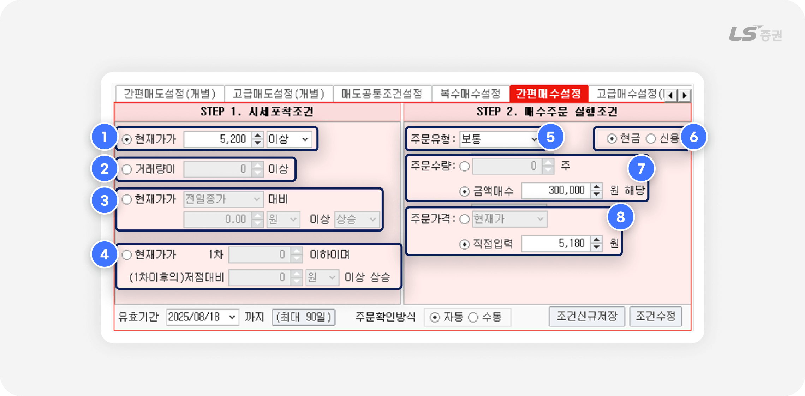
매수 시세포착 조건 설정
-
1
현재가가 지정한 가격 이상 또는 이하가 되면 주문을 접수합니다.
-
2
당일 거래량이 지정한 수량 이상이 되면 주문을 접수합니다.
-
3
현재가가 지정한 기준가격 대비 일정한 금액 또는 비율로 상승/하락 시 주문을 접수합니다.
-
4
현재가가 지정 가격 이하로 하락하여 저점에 도달한 후, 일정한 금액 또는 비율로 상승 시 주문을 접수합니다.
매수 주문 접수내용 설정
-
5
주문유형을 선택합니다.
-
6
결제 방식을 현금/신용 중 선택합니다.
-
7
주문수량을 입력합니다.
‘금액매수’ 선택 시, 입력한 금액을 총 주문금액으로 하여 주문가격을 나눈 몫을 주문수량으로 계산합니다. -
8
주문가격을 입력합니다.
현재가 기준으로 Tick(틱) 단위 호가를 지정하거나, 직접 가격을 입력할 수 있습니다.
예를 들어 볼까요?
현재가가 5,200원 이상이 되면, 총 주문금액 300,000원으로 5,180원에 매수 주문을 하려는 경우
-
1
시세포착조건에서 (1번)현재가 ‘5,200(원) 이상’을 입력합니다.
-
2
매수주문 실행조건에서 (5번)주문유형 ‘보통‘, (7번)주문수량 ‘금액매수’ 선택 후 ‘300,000’원, (8번)주문가격 ‘직접입력’ 선택 후 ‘5,180’원을 입력합니다.
(주문수량은 300,000원을 5,180원으로 나눈 몫인 57개로 자동 계산됩니다.) -
3
조건 저장 후, ‘매수설정내역’ 탭에서 해당 요건의 감시 버튼을 ‘ON’으로 활성화합니다.
저가 트레일링스탑 매수 주문
저점에 도달한 뒤 반등하는 시점에 매수 주문을 접수합니다.
상대적인 저점 기준으로 매수 시점이 결정되기에 매수 가격을 유연하게 설정할 수 있습니다.
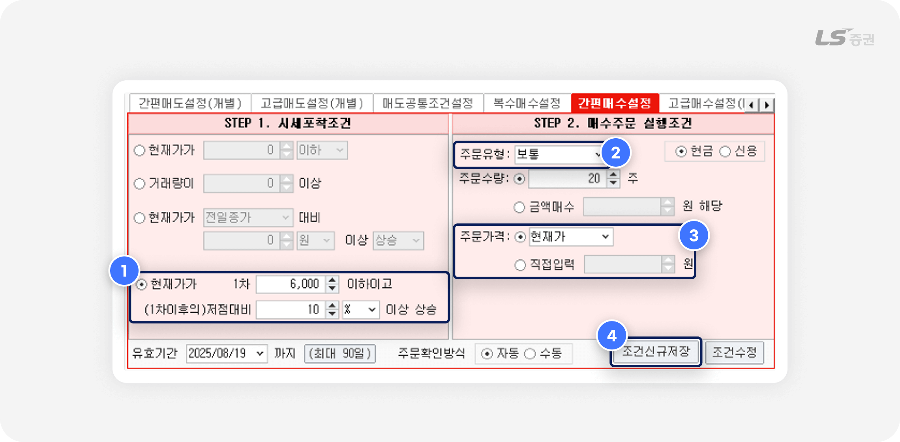
예를 들어 볼까요?
시세가 6,000원 이하로 하락 후, 최저점 기준으로 10% 반등 시 20주를 현재가에 매수 주문하려는 경우
-
1
시세포착 조건을 ‘현재가 6,000’원 이하, 1차 이후의 저점 대비 ’10%’ 이상 상승 시로 입력합니다.
-
2
매수주문 실행조건에서 주문유형 ‘보통‘, 주문수량 ‘20’주를 입력합니다.
-
3
주문가격을 ‘현재가’ 로 선택합니다.
-
4
조건 저장 후, ‘매수설정내역’ 탭에서 해당 요건의 감시 버튼을 ‘ON’으로 활성화합니다.
예시와 같이 설정하면, 시세의 움직임에 따라 실제 주문은 이렇게 접수됩니다.
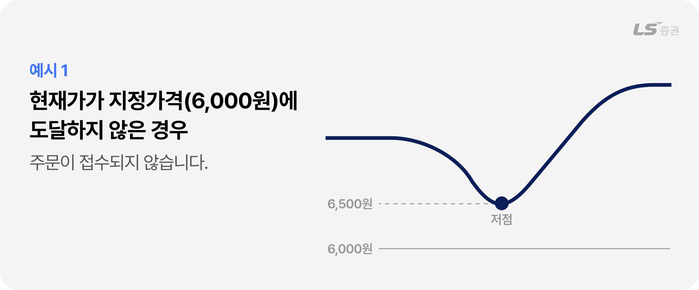
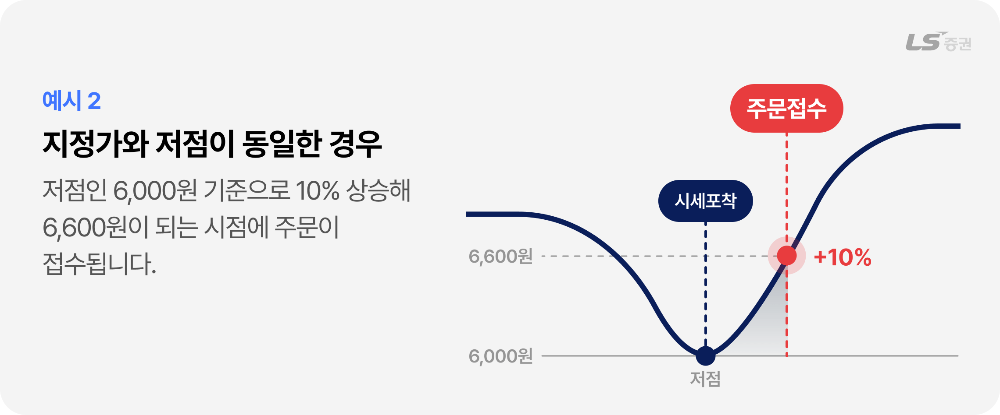
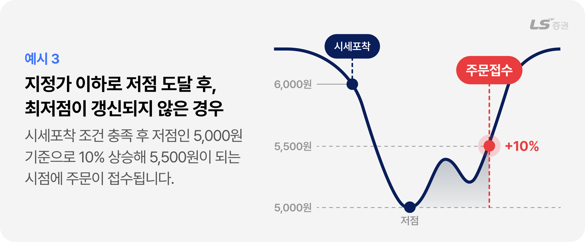
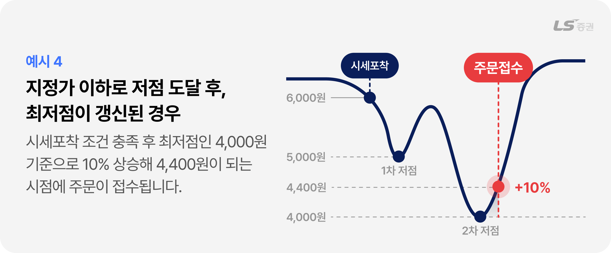
주식 주문유형 정리
| 보통(지정가) | 지정한 가격으로 주문 |
|---|---|
| 시장가 | 주문단가를 지정하지 않고 시장에서 형성되는 가격으로 자동 지정 |
| 중간가 | 최우선 매수호가와 최우선 매도호가의 중간 가격 |
| 조건부지정가 | 지정 한 가격으로 주문 후, 장 마감까지 체결되지 않으면 시장가로 전환되어 즉시 체결 |
| 최유리지정가 | 상대 1차 호가에 지정 |
| 최우선지정가 | 동일 방향 1차 호가에 지정 |
FOK / IOC 주문조건이란?
-
FOK(Fill-Or-Kill)은 모든 수량을 체결할 수 있을 때만 주문을 체결하고, 단 1주라도 체결할 수 없으면 주문 전체를 취소합니다.
예) 50주 주문 시 40주만 체결 가능한 경우, 50주 주문 전체를 취소합니다.
-
IOC(Immediate-Or-Cancel)은 체결 가능한 수량만큼 체결하고, 체결되지 않은 잔량은 취소합니다.
예) 50주 주문 시 40주만 체결 가능한 경우, 40주를 체결하고 10주는 취소합니다.
매수부터 매도까지, 모든 과정을 자동으로
02고급매수설정
매수조건 + 매도주문조건
시세포착 조건 충족 시 매수 주문을 접수하고, 매수 주문이 전량 체결되면 손익 조건에 따라 매도 주문을 접수합니다.
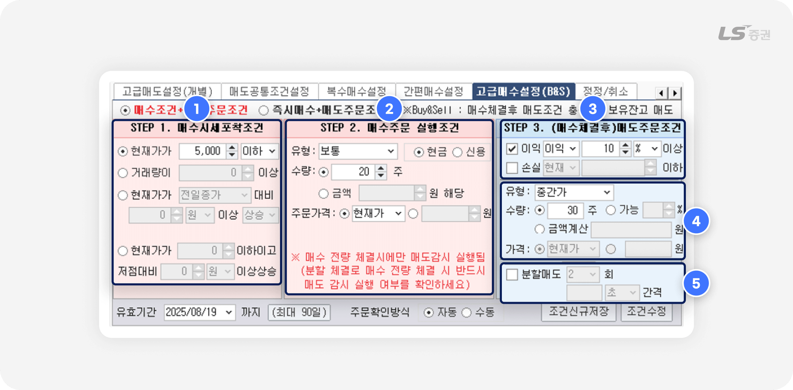
매수 시세포착 조건 설정
-
1
간편매수설정과 동일하게 주문 접수 기준이 되는 시세포착 조건을 설정합니다.
매수 주문 접수내용 설정
-
2
간편매수설정과 동일하게 시세포착 조건 충족 시 자동 접수되는 주문 내용을 설정합니다.
매도 조건 · 주문 접수내용 설정
-
3
매수 주문 전량 체결 후, 매도 주문을 접수하기 위한 체결 물량의 이익 또는 손실 기준을 설정합니다.
종목의 손익 계산은 앞서 설정한 매수 주문으로 체결된 물량의 매입단가만으로 판단하며, 기존 보유잔고나 다른 주문으로 체결된 경우의 매입단가는 손익 계산에 포함하지 않습니다. -
4
매도 주문 접수내용(주문유형, 주문수량, 주문가격)을 설정합니다.
주문수량은 매수 수량을 초과하여 입력할 수 있으며, 기존 보유잔고를 포함한 수량으로 접수할 수 있습니다. -
5
분할매도 여부를 선택할 수 있습니다.
분할매도 선택 시, 설정한 횟수와 시간 간격에 따라 주문 수량을 여러 건으로 나누어 매도 주문을 접수합니다.
예를 들어 볼까요?
20주를 5,000원에 매수 주문을 접수하고, 체결 후 이익 10%이상이 되면 기존 보유잔고 10주와 합산해 총 30주를 중간가에 매도하려는 경우
-
1
시세포착조건에서 현재가 ‘5,000(원) 이하’를 입력합니다.
-
2
매수주문 실행조건에서 주문유형 ‘보통‘, 주문수량 ‘20주’, 주문가격 ‘현재가’를 입력합니다.
-
3
매도주문조건에서 ‘이익 10%’ 이상, 유형 ‘중간가’, 수량 ’30’주를 입력합니다.
-
4
조건 저장 후, ‘매수설정내역’ 탭에서 해당 요건의 감시 버튼을 ‘ON’으로 활성화합니다.
즉시매수 + 매도주문조건
별도의 조건 없이 즉시 매수 주문을 접수하고, 매수 주문이 전량 체결되면 손익 조건에 따라 매도 주문을 접수합니다.
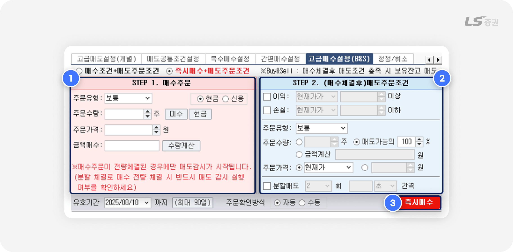
매수 주문 접수내용 설정
-
1
간편매수설정과 동일하게 시세포착 조건 충족 시 자동 접수되는 주문 내용을 설정합니다.
매도 조건 · 주문 접수내용 설정
-
2
고급매수설정의 매수조건+매도주문조건과 동일하게, 매수 주문 전량 체결 후 매도 주문을 접수하기 위한 체결 물량의 이익 또는 손실 기준을 설정합니다.
즉시매수
-
3
버튼 클릭 시 즉시 매수 주문을 접수하고, 매수 주문이 전량 체결되면 매도 주문 조건 충족 시 매도 주문을 자동으로 접수합니다.
참고해주세요!
- 매도 주문 조건 감시는 매수 주문이 전량 체결된 뒤부터 시작됩니다.
- 매수 주문이 분할 체결된 경우, 마지막 수량이 체결된 시점부터 매도 주문 조건 감시가 시작됩니다.
- 매수 주문이 체결되기 전 다른 화면에서 주문 일부 또는 전부를 정정하거나 취소한 경우, 매도 주문 조건 감시가 중단됩니다.
-
매수/매도 주문이 접수되면 본 화면에서 감시를 해제해도 주문이 취소되지 않습니다.
접수된 주문을 정정하거나 취소하려면 ‘정정/취소’ 탭 또는 일반 주문 화면을 이용해 주세요.
조건 설정 한 번으로, 여러 종목을 매수할 때
03복수매수설정
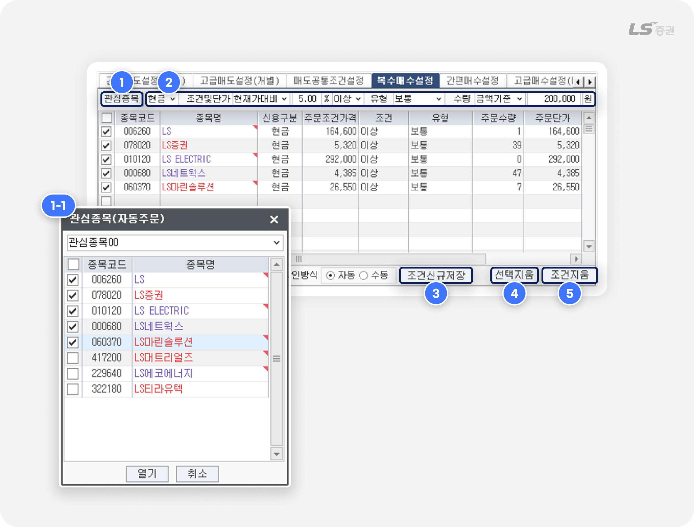
조건 추가
-
1
‘관심종목’ 버튼 클릭 시 관심종목 팝업(1-1번)에서 종목을 추가할 수 있습니다.
매수 조건 · 주문 내용 일괄 설정
-
2
매수 주문 접수를 위한 조건과 주문 내용을 설정하고, 모든 종목에 일괄 적용할 수 있습니다.
이후 변경이 필요한 일부 목록에서 개별적으로 수정할 수 있습니다.
주문 조건 관리
-
3
조건신규저장 : 선택한 조건을 ‘매수설정내역’ 탭에 감시해제 상태(OFF)로 추가합니다.
-
4
선택지움 : 선택한 조건을 목록에서 삭제합니다.
-
5
조건지움 : 모든 조건을 목록에서 삭제합니다.
참고해주세요!
- 복수 매수 주문의 시세포착 조건 유효기간은 당일로 제한됩니다.
- 복수 매수 주문의 설정을 변경하려면 ‘간편매수설정‘ 탭을 이용해 주세요.
- [5400] 주식복수종목주문 화면에서도 여러 종목을 한 번에 주문할 수 있습니다.
빠른 매도로 익절 · 손절하는
04간편매도설정
일반 매도 주문
시세포착 조건과 조건 충족 시 자동 접수되는 주문 내용을 설정합니다.
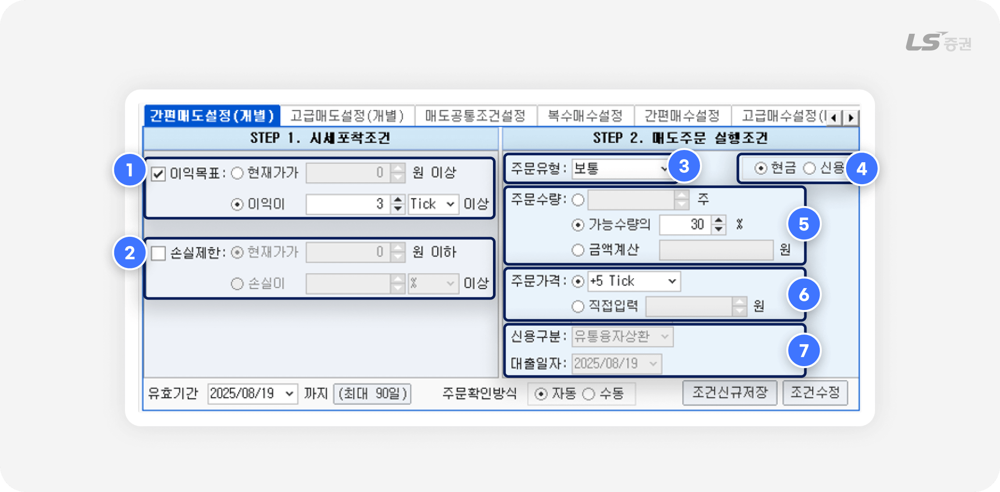
매도 시세포착 조건 설정
-
1
이익목표 : 현재가가 지정 가격 이상 또는 지정한 이익 조건(% 또는 틱) 충족 시 주문을 접수합니다.
-
2
손실제한 : 현재가가 지정 가격 이하 또는 지정한 손실 조건(% 또는 틱) 충족 시 주문을 접수합니다.
매도 주문 접수내용 설정
-
3
주문유형을 선택합니다.
-
4
결제 방식을 현금 / 신용 중 선택합니다.
-
5
주문수량을 입력합니다.
‘가능수량’ 선택 시, 보유잔고 수량은 시세포착 조건을 충족한 시점 기준으로 계산합니다.
‘금액계산’ 선택 시, 입력한 금액을 총 주문금액으로 하여 주문가격을 나눈 몫을 주문수량으로 계산합니다. -
6
주문가격을 입력합니다.
현재가 기준으로 Tick(틱) 단위 호가를 지정하거나, 직접 가격을 입력할 수 있습니다. -
7
결제 방식(4번) ‘신용’ 선택 시 신용구분과 대출일자를 선택할 수 있습니다.
예를 들어 볼까요?
보유한 종목의 이익이 3틱 이상이 되면, 잔고의 30%를 현재가+5틱 에 매도하려는 경우
-
1
시세포착조건에서 (1번)이익목표 체크 후 이익 ‘3 Tick’을 입력합니다.
-
2
매도주문 실행조건에서 (3번)주문유형 ‘보통‘, (5번)주문수량 ‘가능수량의 30’%, (6번)주문가격 ‘+5 Tick’을 입력합니다.
-
3
조건 저장 후, ‘매도설정내역’ 탭에서 해당 요건의 감시 버튼을 ‘ON’으로 활성화합니다.
👉 매입단가 5,000원, 호가단위 10원으로 가정하면, 현재가 기준으로 이익이 3 Tick(5,030원) 도달 시 해당 시점의 매도가능수량이 100주라면 30%(30주)를 현재가 +5 Tick인 5,080원에 매도 주문을 접수합니다.
유연한 매도 전략이 필요할 때
05고급매도설정
이익목표 · 이익보전
목표 가격에서 매도해 이익을 확보하거나, 목표에 도달하지 못해도 일정한 이익/손실을 보전하기 위한 매도 주문 조건을 설정합니다.
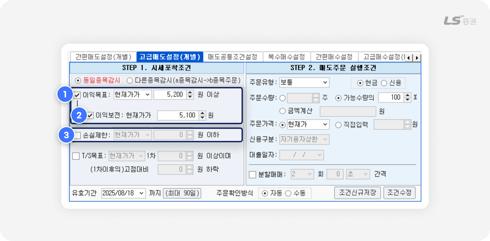
시세포착조건 설정
-
1
이익목표 : 설정한 목표 가격 또는 이익 조건(% 또는 틱) 충족 시 매도 주문을 접수합니다.
-
2
이익보전 :
현재가가 상승하여 이익보전 기준 가격에 도달하였지만, 이익목표 설정 가격에는 도달하지 못하고 이익보전 가격까지 하락하면 매도 주문이 접수됩니다.
-
3
손실제한 : 설정한 목표 가격 또는 손실 조건(% 또는 틱) 충족 시 매도 주문을 접수합니다.
예를 들어 볼까요?
현재가 5,000원, 설정한 이익목표 5,200원, 이익보전 5,100원인 경우
- 현재가가 상승해서 5,100원을 거쳐 이익목표인 5,200원에 도달 시, 매도 주문이 접수됩니다.
- 현재가가 상승해서 5,100원을 거쳤으나 5,200원에 도달하지 못하고 이익보전 가격인 5,100원까지 하락 시, 매도 주문이 접수됩니다.
예를 들어 볼까요?
이익목표를 ’10% 이하’로 설정한 경우
- 잔고 평가 이익률이 15%인 경우, 이익이 감소해 10% 이하가 되면 매도 주문이 접수됩니다.
- 잔고 평가 이익률이 5%인 경우, 감시를 실행하는 즉시 매도 주문이 접수됩니다.
- 잔고 평가 이익률이 -5%인 경우, 이익이 없는 것으로 간주되어 즉시 주문이 접수되지 않습니다. 이익률이 변동하여 0% 이상이 되면 매도 주문이 접수됩니다.
예를 들어 볼까요?
손실제한을 ’10% 이하’로 설정한 경우
- 잔고 평가 이익률이 -30%(손실률 30%)인 경우, 손실이 감소해 -10% 이상이 되면 매도 주문이 접수됩니다.
- 잔고 평가 이익률이 -5%(손실률 5%)인 경우, 즉시 매도 주문이 접수됩니다.
- 잔고 평가 이익률이 5%인 경우, 손실이 없는 것으로 간주되어 즉시 주문이 접수되지 않습니다. 손실률이 변동하여 0% 미만이 되면 매도 주문이 접수됩니다.
주의하세요!
- 이익목표와 이익보전을 동시에 설정하는 경우, 이익보전이 1차 목표가격, 이익목표가 2차 목표가격에 해당합니다. 따라서 시세포착조건 설정 시 이익보전 값은 이익목표 값보다 낮게 설정해야 합니다.
대주잔고 이익목표·이익보전
시세 하락 시 이익을 얻는 매도 방법으로, 시세 하락이 예상되는 주식을 빌려 매도한 뒤 상환일 이내에 주식을 저렴하게 매수해서 상환하여 시세 차익을 얻을 수 있습니다.
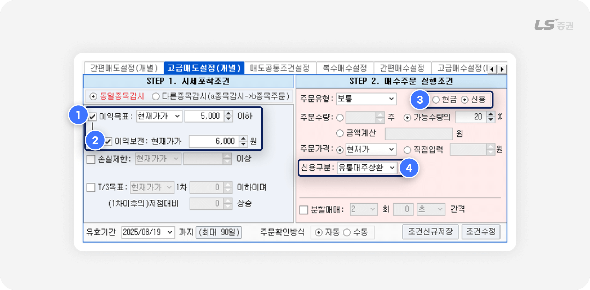
시세포착조건 설정
-
1
이익목표 : 설정한 목표 가격 또는 이익 조건(% 또는 틱) 충족 시 매수 주문을 접수합니다.
-
2
이익보전 설정 :
현재가가 상승하여 이익보전에서 설정한 가격 도달 후, 이익목표 가격에 도달하지 못하고 이익보전 설정 가격까지 하락 시 매수 주문을 접수합니다.
유통대주상환 주문 설정
-
3
매수주문 실행조건에서 결제방식 ‘신용‘을 선택합니다.
-
4
신용구분을 ‘유통대주상환’으로 선택합니다.
'유통대주상환' 선택 시 매수주문 실행조건 화면 배경이 매수 개념에 해당하는 색상으로 변경됩니다.
예를 들어 볼까요?
현재가 7,000원, 설정한 이익목표 5,000원, 이익보전 6,000원인 경우
- 현재가가 하락해서 6,000원을 거쳐 이익목표인 5,000원에 도달 시, 매수 주문이 접수됩니다.
- 현재가가 하락해서 6,000원을 거쳤으나 5,000원에 도달하지 못하고 이익보전 가격인 6,000원까지 상승 시, 매수 주문이 접수됩니다.
주의하세요!
- 이익목표와 이익보전을 동시에 설정하는 경우, 이익보전이 1차 목표가격, 이익목표가 2차 목표가격에 해당합니다. 따라서 유통대주상환의 경우, 시세포착조건 설정 시 이익보전 값은 이익목표 값보다 높게 설정해야 합니다.
T/S목표 (트레일링스탑 매도 주문)
주가가 고점 도달 후 하락 추세로 전환되는 시점에 매도 주문을 접수합니다.
주가의 상승 정도에 따라 매도 시점이 달라지기 때문에 유연하게 대응할 수 있습니다.
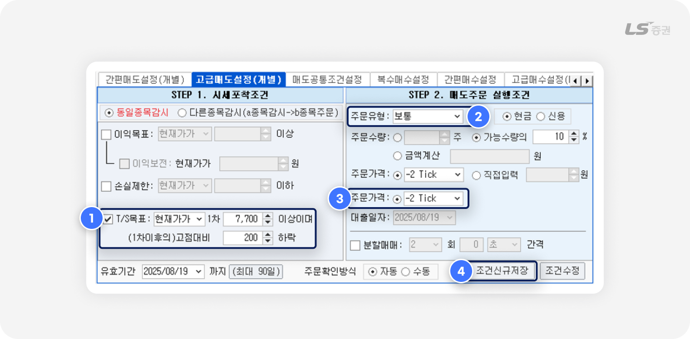
예를 들어 볼까요?
시세가 7,700원 이상으로 상승 후, 최고점 기준으로 200원 하락 시 보유 물량의 10%를 현재가 ‘-2 Tick’에 매도 주문하려는 경우
-
1
시세포착 조건을 ‘현재가 7,700’원 이상, 1차 이후의 고점 대비 ’200’원 하락 시로 입력합니다.
-
2
매도주문 실행조건에서 주문유형 ‘보통’, 가능수량의 ’10%‘를 입력합니다.
-
3
주문가격을 ‘-2 Tick’으로 선택합니다.
-
4
조건 저장 후, ‘매도설정내역’ 탭에서 해당 요건의 감시 버튼을 ‘ON’으로 활성화합니다.
예시와 같이 설정하면, 시세의 움직임에 따라 실제 주문은 이렇게 접수됩니다.
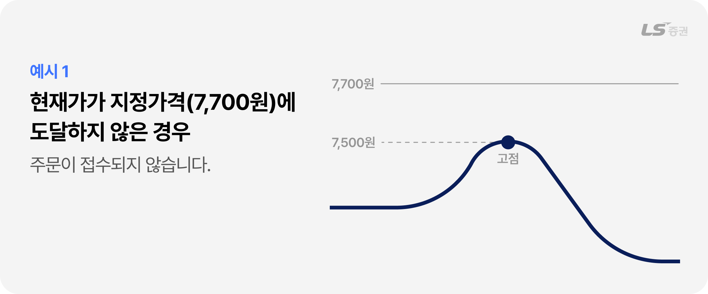
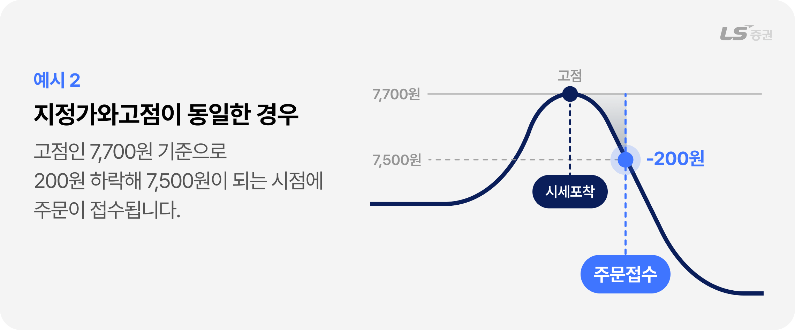
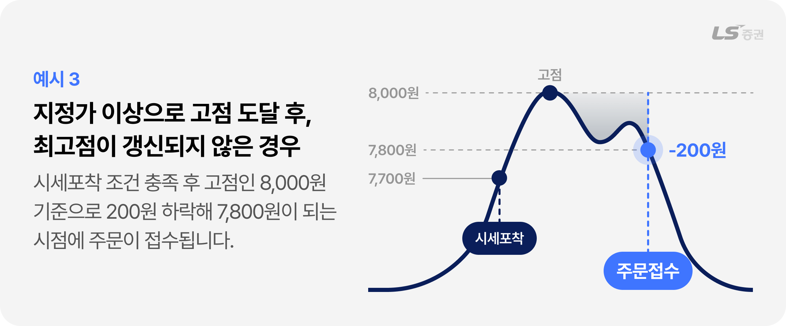
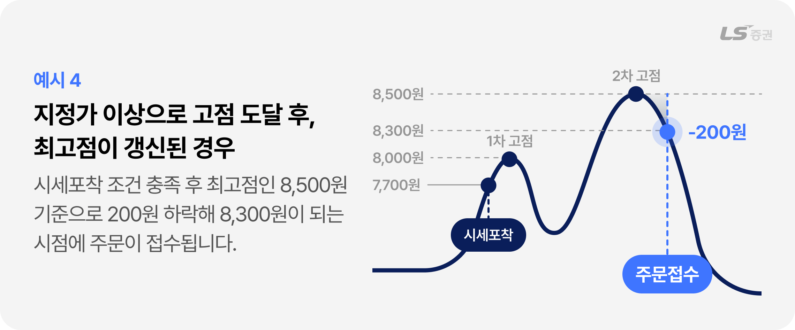
다른종목감시
다른 업종, 상품, 종목의 시세 변화에 따라 주문을 접수합니다.
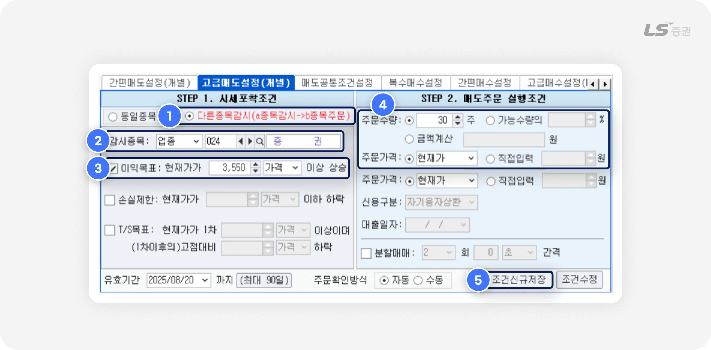
예를 들어 볼까요?
증권 업종의 가격이 3,550원 이상 도달 시 보유 물량 30주를 현재가에 매도 주문하려는 경우
-
1
시세포착 조건에서 ‘다른종목감시’를 선택합니다.
-
2
감시종목을 '업종' '024 증권'으로 선택합니다.
-
3
이익목표를 체크하고, 현재가를 ‘3,550(원) 가격’ 이상 상승으로 입력합니다.
-
4
매도주문 실행조건에서 주문수량 ’30’주, 주문가격 ‘현재가’ 를 입력합니다.
-
5
조건 저장 후, ‘매도설정내역’ 탭에서 해당 요건의 감시 버튼을 ‘ON’으로 활성화합니다.
다른 종목 감시, 이렇게도 활용할 수 있어요
- 보유종목의 업종 대표주 시세에 따라 주문하기
- 보유종목의 업종 지수에 따라 주문하기
- 선물 또는 옵션 시세에 따라 ETF 주문하기
- ELW기초자산 종목에 따라 ELW 주문하기
조건 설정 한 번에, 여러 종목을 매도할 때
06매도공통조건설정
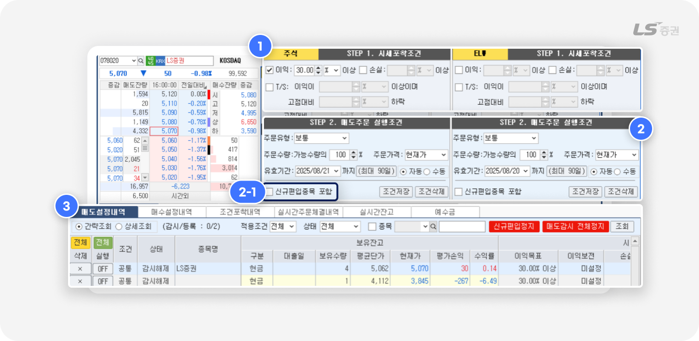
- 시세포착 조건(1번)과 매도 주문 접수내용(2번)을 여러 종목에 일괄 설정할 수 있습니다.
- 신규편입종목 포함(2-1번) 선택 시 감시 중 신규 매수로 편입된 종목도 조건 감시 대상에 포함됩니다.
- 매도설정내역(3번)에서 적용된 조건을 확인할 수 있습니다.
참고해주세요!
- '신규편입종목 포함' 체크 후 조건 저장 시, 해당 종목이 매수 등으로 편입되면 '매도설정내역'의 조건 감시가 'ON'으로 변경됩니다.
- '신규편입종목 포함' 체크 해제 후 조건 저장 시, 종목 보유잔고에 변동이 있어도 조건 감시가 자동으로 변경되지 않습니다. 감시를 활성화하려면 '매도설정내역'에서 종목별로 직접 조건 감시를 'ON'으로 변경해야 합니다.
주의하세요!
- 스탑로스 감시는 기본적으로 OFF 상태에서 시작됩니다. 이는 이미 보유 중인 종목이 설정한 조건을 충족할 수 있기 때문에, 조건만 저장해 두고 고객이 원하는 경우에만 직접 ON으로 전환하도록 한 것입니다.
-
예를 들어, 공통조건을 ‘이익 30% 이상’으로 설정해 두었는데, 보유 종목 중 이미 50% 수익이 발생한 종목이 있다면, 감시를 ON으로 바꾸는 순간 즉시 매도 주문이 접수될 수 있습니다.
따라서 반드시 매도 의사가 있는 종목만 신중하게 감시를 ON으로 전환해 사용하시기 바랍니다.
지금까지 Part2 [5220] 주식스탑로스 화면의 전략별 주문 방법을 상세하게 살펴보았습니다.
주문 조건을 활용한 자동 주문의 활용 방법은 무궁무진합니다.
스탑로스 주문으로 나의 소중한 시간도 챙기고, 거래 이익도 챙겨 보세요.